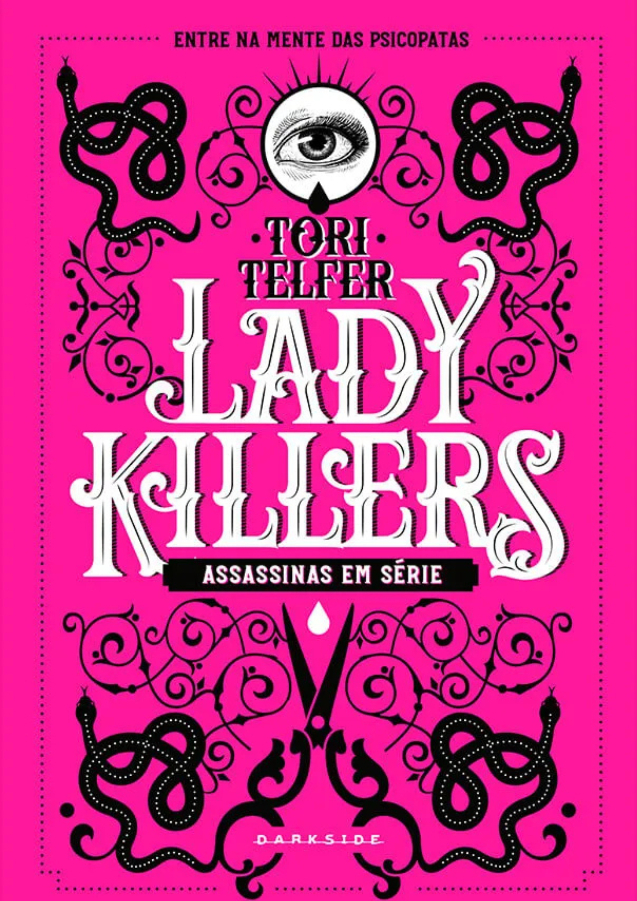

Suicídas
Raphael MontesAntes que o mundo pudesse sonhar com o terrível jogo da baleia azul, que leva jovens a tirar a própria vida, ou que a série de televisão Thirteen Reasons Why fosse lançada e se tornasse o sucesso que é hoje, Raphael Montes, então com 22 anos, já tratava do tema do suicídio entre jovens, com a ousadia que virou sua marca registrada. Em seu primeiro livro, que a Companhia das Letras agora relança acrescido de um novo capítulo, conhecemos a história de Alê e seus colegas, jovens da elite carioca encontrados mortos no porão do sítio de um deles em condições misteriosas que indicam que os nove amigos participaram de um perigoso e fatídico jogo de roleta russa. Aos que ficaram, resta tentar descobrir o que teria levado aqueles adolescentes, aparentemente felizes e privilegiados, a tirar a própria vida.
Heated Rivalry
Rachel ReidA estrela do hóquei profissional Shane Hollander não é apenas absurdamente talentoso: ele também tem uma reputação impecável. O hóquei é sua vida. Agora que é o capitão do time Montreal Voyageurs, ele não deixará que nada coloque seu trabalho em risco ― muito menos o cara russo. O capitão do Boston Bears, Ilya Rozanov, é tudo o que Shane não é. Autoproclamado rei do gelo, é tão arrogante quanto talentoso. Ninguém consegue vencê-lo ― exceto Shane. Os dois construíram suas carreiras em cima dessa rivalidade lendária, mas quando saem da pista de gelo, o calor entre eles é inegável. Quando Ilya percebe que quer mais do que alguns encontros secretos, ele sabe que precisa se afastar ― o risco é grande demais. Mas conforme a atração entre eles se intensifica, os dois lutam para manter o relacionamento longe dos holofotes. Se a verdade vier à tona, a carreira de ambos será arruinada. Só que, quando o desejo que sentem um pelo outro passa a rivalizar com a ambição no rinque, manter o segredo deixa de ser uma opção.

Lady Killers
Tori TelferQuando pensamos em assassinos em série, pensamos em homens. Mais precisamente, em homens matando mulheres inocentes, vítimas de um apetite atroz por sangue e uma vontade irrefreável de carnificina. As mulheres podem ser tão letais quanto os homens e deixar um rastro de corpos por onde passam ― então o que acontece quando as pessoas são confrontadas com uma assassina em série? Quando as ideias de “sexo frágil” se quebram e fitamos os desconcertantes olhos de uma mulher com sangue seco sob as unhas?